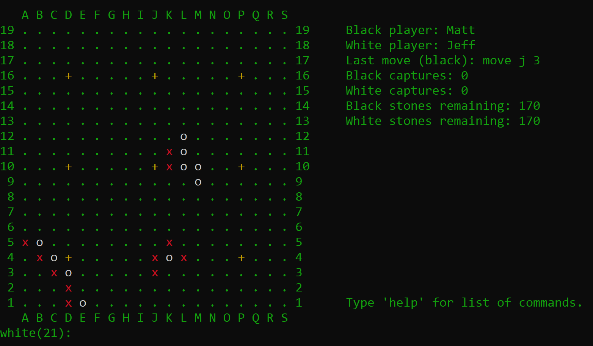
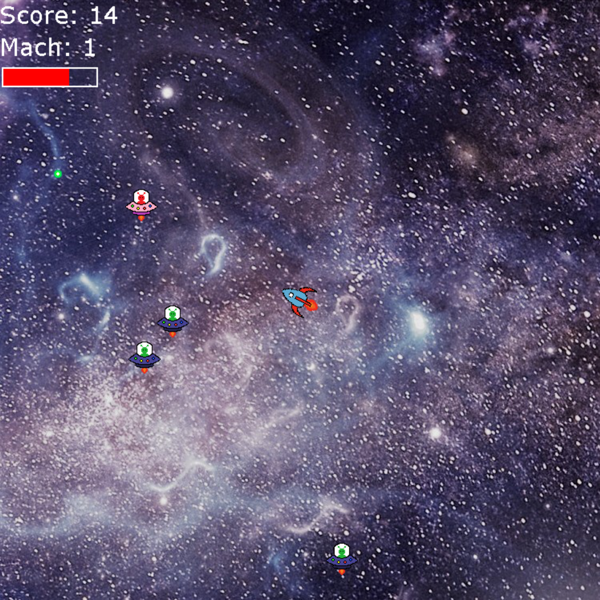

A collection of my projects, sorted by my most recent first
A simple website which I coded from scratch in HTML+CSS to showcase myself and interesting things that I've worked on. I bought the domain at Google Domains and hosted it on GitHub.
A prediction of future COVID-19 hospitalizations given a dataset of EU country-level cases by age group and current hospitalizations. The first part of the project predicts whether hospitalizations would increase or decrease a week from each date (with an accuracy of 70%), and the second part predicts how many hospitalizations would occur. Other features include custom training/validation data splitting, preprocessing, and multiple training algorithms. This was my final project for Machine Learning that I worked on with another student. The code was written in Python using sklearn, numpy, pandas, and the report was generated in Jupyter Notebook.
Source Code (currently only available to members of the Cornell community)
A fully playable game of Go that features territory calculation, handicap, variable board sizes, and an ELO ranking system. This was my final project for Data Structures and Functional Programming that I worked on with three others. The code written in OCaml (mainly using its functional features), and it can be run in Ubuntu using a remote SSH.
Source Code (currently only available to members of the Cornell community)
A model done in SketchUp of my fraternity house at Cornell. This was my final project for Intro to CADD.

A playable game of Simon Says on a development board. Rather than pressing colored buttons to match the sequence like in the original Simon Says, the board must be tilted in the corresponding directions (this was done using the built-in accelerometer). The code was written in C in MCUXpresso IDE to be uploaded onto a FRDM-KL25Z board. This was my final project for Embedded Systems that I worked on with another student.

A tool that analyzes the risk (covariance) and reward (expected return) of ETFs. The user is able to plug in any amount of ETFs from what our dataset provides; once selected, a risk vs. reward graph is shown depicting every possible portfolio between the ETFs. From there, the user is able to input a desired risk, and the optimal portfolio at the closest risk is outputted. This project is meant to visually depict the efficient frontier. This project was completed with two other peers, and was written in C++.
An asteroids-like video game that I coded from scratch the summer after I took Intro to Computing. Features include mouse control, polar/cartesian mathematics, increasing difficulty, and spritework. This was coded in Python using pygame.
